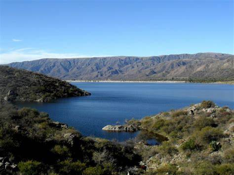

Bienvenidos a San Francisco

Francisco del Monte de Oro se extiende en la zona norte de la provincia de San Luis, es el municipio cabecera del departamento Ayacucho y, cada año, conquista a múltiples visitantes de distintas procedencias.
Está emplazado en un valle, al pie de las sierras de Michilingüe, con una altitud media de 796 msnm, entre frutales que dominan sus alrededores, molles, algarrobos y palmeras caranday.
"Nacido en medio de un valle, surcado por ríos, y rodeado por las Sierras Centrales y las de Socoscora, este poblado cautivante invita a ser protagonista de aventuradas actividades en escenarios de inimaginable hermosura.
Lugares importantes a visitar:
- Solar Historico: "Primera escuela de Domingo Faustino Sarmiento", Banda Sur "Casco Historico"
- Casa Museo Henry Viegas, Banda Sur "Casco Historico"
- Pinturas rupestres, Rodeo Gallina, desvio Ruta 9. Se recomienda Guia
- Salto "Escondido", trekking desvio de ruta 9, ir con Guia
- Balnerario "Primer Baden", Banda Sur "Casco Hisotorico"
- Balneareo "Segundo Baden", ruta 9.
- Dique "Las Palmeras", Banda Sur "Casco Historico"
- Casa Museo "Rosenda Quiroga", Banda Norte, Centro de San Francisco
- Plaza "Pringles", Banda Norte, Centro de San Francisco
Podes encontrar:
Restaurantes
- "Destino" Resto Bar(centro)
- "La Esquina" Resto Bar(centro)
- Resto "La Yeya"(centro)
- Posada "El Algarrobo"(Banda sur)
Estacion de Servicio:
- "Yo Soy" combustible Shell, 3 cuadras de la plaza principal
- "El AMADO", frente la terminal de omnibus
Terminal de Omnibus:
- Terminal de Omnibus San Francisco, entrada por ruta 146
Alojamientos:
- Cabañas Mysky Wayra: tel: 2226603481
- Portal de la Quebrada: tel: 011 34335682
- Cabañas Mamull Kura: tel:26615474044
- Hotel Martin: tel: 2651426140
- Casa Sarmiento alojamiento: tel: 2657586634